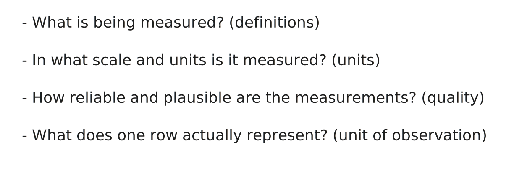
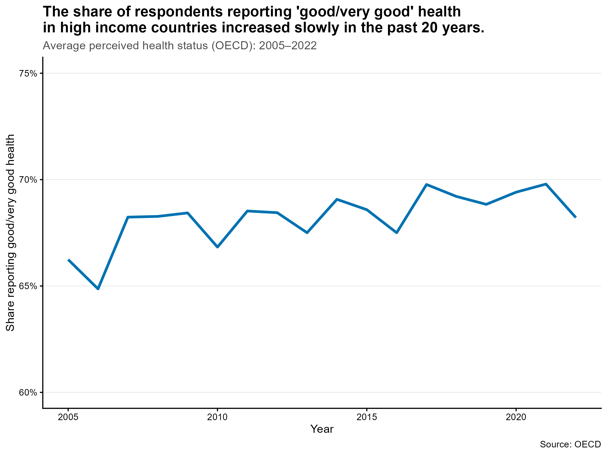
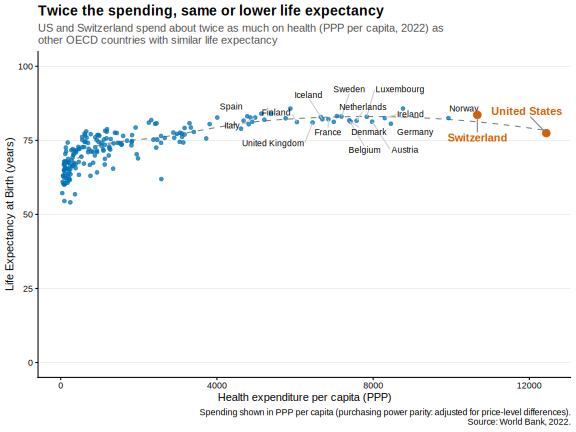

Learning data handling through real-world health economics data
Do higher health expenditures lead to better health outcomes? Students explored this question by working with international data on health spending and outcomes. The project introduced the full data pipeline, from retrieving data to presenting results. Being able to work with data is essential in applied economics because empirical work starts well before estimation. The short answer to the research question: yes, higher expenditures are associated with better outcomes, but only up to a certain point.
Author
Aurélien Sallin
Published
January 19, 2026
Keywords
RStats, Data science, Health economics, Health expenditure, Life expectancy
Teaching young economists to work with data
In my course “Data Handling” at the University of St. Gallen, students in BA Economics learn their first steps in handling data. These steps are usually not covered in economics programs, where the focus lies mostly on statistics and econometrics. However, applied work starts earlier: finding relevant data, importing it, cleaning it, merging it, and summarising it. This is represented by the data pipeline workflow, which forms the backbone of the course.
To make these steps concrete, we applied the pipeline to an economic question in a group project: Do higher health expenditures buy better health? Students worked with real-world data on life expectancy and perceived health status to investigate whether and how spending relates to outcomes. This setup allows students to practice the technical steps in data handling while engaging with a topic that raises real economic questions.
A data handling project linking health spending and health outcomes
The question of whether higher health expenditures lead to better health outcomes is a recurring theme in health economics. Spending is positively associated with outcomes in low- and middle-income countries, while the relationship is weaker in high-income settings (“plateau effect”). The United States and Switzerland are a well-known case: high spending with comparatively lower outcomes.
For this project, students worked with international data to examine three hypotheses:
Higher health expenditures are associated with higher life expectancy.
Higher health expenditures are associated with better perceived health status.
The marginal gains from health spending are smaller in high-income settings than in lower-income settings.
Students were guided through the technical steps to investigate these three hypotheses.
Retrieving data through APIs
Because international economic analysis relies on reproducible data pulls, APIs are becoming standard tools in applied work. Students retrieved data on health expenditures from the World Bank API using API wrappers such as WDI in R, or by programming their own API wrapper. We focused on three indicators:
Current health expenditure per capita (in current US$)
Current health expenditure (% of GDP)
Current health expenditure per capita, PPP (current international $)
Data on perceived health status was retrieved from the OECD API through the OECD package. Accessing data through APIs introduces students to reproducible workflows and avoids manual downloading. To support this part of the project, Minna Heim from the KOF Institute gave a guest lecture on working with APIs.
Early steps involved filtering out irrelevant observations (e.g., aggregates or gender-specific data) and standardising variable names and formats across datasets. Data cleaning is where the magic of data science often happens.
Know your data
“To not mislead others and not embarrass yourself, know your data”. (Jeremy G. Weber)

We emphasized the four basic questions to apply to a new dataset before going deeper into analysis. This part is inspired by Jeremy G. Weber’s “Statistics for Public Policy”, 2024.
Definitions: what exactly is being measured. Many economic indicators are constructed rather than natural facts (e.g. poverty rates, unemployment, costs).
Units: in which quantities the variable is expressed (e.g. liters or gallons, USD or PPP, per capita or totals, etc.). This also covers scale: percentages vs shares, per capita vs totals, logs vs levels.
Quality and plausibility: spotting measures and values that are unrealistic or inconsistent with other data sources (e.g. outliers).
Unit of observation: what one observation represents (e.g. country or country-year). This clarifies the relevant population and the level of analysis. Is the dataset a panel, a cross-section, a repeated cross-section, or a time series?
These points are relevant for this project. The choice between USD, PPP, or percentage of GDP for health expenditures affects interpretation, as do definitions of perceived health status. Students noticed how much interpretation depends on definitions, units, and the underlying data architecture.
Merging sources and exploring the data
The datasets were merged at the country-year level. This step raises practical questions about missing values, sample composition, and representativeness. World Bank variables merge well but contain missing values in some indicators. When adding OECD data, join choice affects the resulting sample. For example, an inner join restricts the sample to OECD countries, while a left or full join retains more information at the cost of missingness. These decisions influence the interpretation of results and illustrate the real-world challenges of working with data from different sources.
This part connected to concepts seen in the course: panel structures, join types, and handling missing data. It illustrated that empirical work in economics involves many decisions before any model is estimated.
Measuring health expenditures
Health expenditures can be expressed in different ways. In this project we explored three common indicators: expenditure per capita in USD, expenditure per capita in Purchasing-Power-Parity (PPP) terms, and expenditure as a share of GDP. These indicators do not tell the same story. USD reflects nominal spending power, PPP adjusts for differences in price levels, and the GDP share indicates how much of a country’s output is given to health care.
For cross-country comparisons, PPP is usually more informative because it accounts for cost-of-living differences. Using USD tends to exaggerate gaps between countries with different price levels, and the GDP share can look high in countries with smaller economies even when absolute health spending is low. This also affects interpretation of cases such as the United States, where high spending in USD and PPP terms coexists with lower outcomes.
Students were asked to look at expenditures in USD and as share of GDP, discuss observed trends, and compare indicators. We clearly saw a pattern of increasing per capita healthcare spending for high-income countries since 2000, whereas expenditures in countries in the lower income bracket increased slower. On average, high-income countries dedicated 8.1% of GDP for health in 2022.
Measuring health outcomes: life expectancy and perceived health status
We used two outcomes: life expectancy (from the World Bank) and perceived health status (from the OECD). Life expectancy is a widely used indicator of population health and correlates with many determinants of health. Perceived health status captures how individuals evaluate their own health and varies across countries for both health-related and cultural reasons. Students were asked to reflect on the advantages and disadvantages of using these measures as proxies for health quality.
Differences in perceived health status are informative but harder to compare across countries because reporting styles, expectations, and social norms influence responses. This makes it possible for two countries with similar health systems to display different levels of reported health.

Life expectancy is highly correlated with income brackets. We observe a Covid effect especially in middle income countries. Average perceived health status in OECD countries navigated between 65% and 70% since 2005, which is stable in comparison to increases in expenditures.
The final story: insights and visualization
The relationship between expenditures and outcomes confirms the hypotheses. To answer our research question: yes, higher spending is associated with higher life expectancy, but the gains flatten at higher levels of spending (diminishing returns). This is particularly impressive for two outlier countries: Switzerland and the US.

For perceived health status, the association is weaker and only observable for OECD countries. Cultural and reporting differences play a larger role, and countries with similar levels of spending can report different levels of perceived health.
At the end of the project, students were asked to reflect and communicate their results through a short LinkedIn post. This forced them to translate an analytical workflow into a clear narrative for a broader audience.
Some groups chose a more classic academic narrative (“Our analysis examines how healthcare spending relates to population health across income groups.”), while others adopted a more polemic or provocative tone 😎(with titles like “💡The Wealth-Health Gap: Money Buys Years, But Only Up To A Point”, “What keeps people healthy longer – money or something more?”, or “Greedy Big Pharma or drivers of longer lives? As ageing, long COVID and tight budgets strain health systems, one question matters: are we buying more health or just spending more money?”). The range of styles showed that data can support different narratives, as long as the underlying work is sound.
Conclusion
This project combines data handling with economic reasoning. Students worked with real data, used reproducible workflows, and examined how measurement choices affect conclusions. The exercise shows how data science and health economics meet in practice, and how young economists can now work with data in ways that lead to meaningful and interesting economic conclusions.
As the instructor, it was encouraging to see how quickly students could implement the full data pipeline and arrive at their own data-informed conclusions once they worked with real data. The way we teach data science has changed significantly in the past three years with the rise of large language models. Teaching data science and coding in 2025 is not the same as in 2022: in my experience, students are more effective at producing results with code, but less likely to understand every step in detail.
This project emphasised the understanding of each step while still enabling students to complete a full analysis. Only a few years ago, delivering such an end-to-end pipeline would have been unlikely at the bachelor level; today it has become achievable and rewarding for students 🏆🎯✅.
Acknowledgments
This course was originally created by Ulrich Matter. I am grateful for the foundation he provided and have since taken over and further developed the course content. To Federica and Andrea for support in preparing, supporting students, and grading the project. To Minna Heim for taking time to inspire students and to prepare the lecture on APIs. To Matt Bannert for inspiration.
The code:
Show R code
# Code for the project 2025 and the blog post on health expenditure and outcomes# Author: Aurélien Sallin# Date: January 2026# This code is different than the one used for the official solution, because# it is adapted for the blog post.# CHAPTER 0 ---------------------------------# Load required librarieslibrary(dplyr)library(tidyverse)library(summarytools)library(ggplot2)library(qs)library(ggrepel)library(WDI)library(OECD)# Set flag to download and process data or read from cachedownload_and_process <-FALSE# CHAPTER 1 ---------------------------------# Chapter 1: Search for health expenditure indicators,# Download and preprocess World Bank health data# Search for relevant indicators related to health expenditure from the World Bank databaseindicators <-WDIsearch("health expenditure")head(indicators, 10) # Display the first 10 resultsif (download_and_process) {# Download and preprocess World Bank health data df_WorldBank_health <-WDI(country ="all",indicator =c("ind_WorldBank_health_gdp"="SH.XPD.CHEX.GD.ZS", # Health expenditure as % of GDP"ind_WorldBank_health_usd"="SH.XPD.CHEX.PC.CD", # Health expenditure per capita (current US$)"ind_WorldBank_health_pp"="SH.XPD.CHEX.PP.CD", # Health expenditure per capita (PPP)"ind_WorldBank_lifeexpectancy"="SP.DYN.LE00.IN"# Life expectancy at birth (years) ),start =2000,end =2024,extra =TRUE ) |>as_tibble()# Remove aggregate regions from the dataset df_WorldBank_health <- df_WorldBank_health |>filter(region !="Aggregates")# Select relevant variables and clean the dataset df_WorldBank_health <- df_WorldBank_health |>select( iso3c, year, income, country, ind_WorldBank_health_gdp, ind_WorldBank_health_usd, ind_WorldBank_health_pp, ind_WorldBank_lifeexpectancy ) |>filter(iso3c !="") |>rename(country = iso3c,country_name = country )# Explore countries with NA: many are high income na_table <- df_WorldBank_health |>group_by(income, country_name, country) |>summarise(number_years =n_distinct(year),na_gdp =sum(is.na(ind_WorldBank_health_gdp)),na_usd =sum(is.na(ind_WorldBank_health_usd)),na_pp =sum(is.na(ind_WorldBank_health_pp)),na_le =sum(is.na(ind_WorldBank_lifeexpectancy)) ) |>filter(na_gdp >0| na_usd >0| na_pp >0| na_le >0) na_table# Save data in cache as .qsqsave(df_WorldBank_health, "Project_dh2025/data/wb_health.qs")}# CHAPTER 3 ---------------------------------# Chapter 3: Download and preprocess OECD health status data# Perceived health statusif (download_and_process) {# Download and preprocess OECD health status data dataset_id_phs <-"OECD.ELS.HD,DSD_HEALTH_STAT@DF_PHS,1.0" df_oecd_phs <-get_dataset( dataset_id_phs,start_time =2000,end_time =2024 )# Filter for perceived health status df_oecd_phs <- df_oecd_phs |>filter(SEX =="_T") |># all gendersfilter(AGE =="Y_GE15") |># aged 15 years old and overfilter(HEALTH_STATUS =="G") # who report their health to be ‘good/very good' (or excellent)# We also focus on non-defined Socio-econ status df_oecd_phs <- df_oecd_phs |>filter(SOCIO_ECON_STATUS =="_Z")# Keep the relevant variables and values df_oecd_phs <- df_oecd_phs |>mutate(TIME_PERIOD =as.integer(TIME_PERIOD),ObsValue =as.numeric(ObsValue) ) |>select(REF_AREA, TIME_PERIOD, ObsValue) |>rename(country = REF_AREA,year = TIME_PERIOD,health_status_oecd = ObsValue )# Save data in cacheqsave(df_oecd_phs, "Project_dh2025/data/oecd_phs.qs")}if (!download_and_process) { df_WorldBank_health <-qread("Project_dh2025/data/wb_health.qs") df_oecd_phs <-qread("Project_dh2025/data/oecd_phs.qs")}# CHAPTER 4 ---------------------------------# Chapter 4: Merge World Bank and OECD datasets# Merge datasetsdf_final <- df_WorldBank_health |>full_join(df_oecd_phs, by =c("country", "year"))# Transform income groups to factors:income_groups <-c("Low income", "Lower middle income", "Upper middle income", "High income")df_final <- df_final |>mutate(income =factor(income, levels = income_groups))# CHAPTER 5 ---------------------------------# Chapter 5: Analyze and visualize health expenditure trendsdf_final |>pivot_longer(cols =c( ind_WorldBank_health_gdp, ind_WorldBank_health_usd, ind_WorldBank_health_pp ),values_to ="value",names_to ="indicator" ) |>group_by(year, indicator) |>summarise(ind_year =mean(value, na.rm =TRUE), .groups ="drop") |>mutate(# Transform GDP values to percentage for labelingformatted_value =case_when( indicator =="ind_WorldBank_health_gdp"~ ind_year,TRUE~ ind_year ) ) |>ggplot(aes(x = year, y = formatted_value, color = indicator)) +geom_line(linewidth =1.2) +facet_wrap(~indicator,ncol =1,scales ="free_y",labeller =labeller(indicator =c(ind_WorldBank_health_gdp ="Health expenditure (% of GDP)",ind_WorldBank_health_usd ="Health expenditure per capita (USD)",ind_WorldBank_health_pp ="Health expenditure per capita (PPP)" ) ) ) +scale_color_manual(values =c(ind_WorldBank_health_gdp ="#0072B2",ind_WorldBank_health_usd ="#009E73",ind_WorldBank_health_pp ="#D55E00" ),guide ="none" ) +scale_y_continuous(labels =function(x) {# Check if this is the GDP facet (smaller values) and add % signsif (length(x) >0&&max(x, na.rm =TRUE) <15) {paste0(round(x), "%") } else {as.character(round(x)) } } ) +expand_limits(y =0) +labs(title ="Health expenditure over time",subtitle ="Different measurement concepts shown separately",x ="Year",y =NULL ) +theme_classic() +theme(strip.background =element_blank(),strip.text =element_text(size =11, angle =0, hjust =0, face ="bold"),legend.position ="bottom",plot.title =element_text(size =14),plot.subtitle =element_text(size =11),panel.grid.major.x =element_line(color ="grey90", linewidth =0.3) )df_gdp <- df_final |>filter(!is.na(income)) |>filter(year ==2022) |>select(year, country, income, ind_WorldBank_health_gdp) |>group_by(year, income) |>summarise(ind_WorldBank_health_pp =mean(ind_WorldBank_health_gdp, na.rm =TRUE),.groups ="drop" )# Graph 1 for blog# Add group label and value at the end of each line (RHS), remove legenddf_plot <- df_final |>filter(!is.na(income)) |>filter(year >=2000& year <=2022) |>select(year, country, income, ind_WorldBank_health_pp) |>group_by(year, income) |>summarise(ind_WorldBank_health_pp =mean(ind_WorldBank_health_pp, na.rm =TRUE),.groups ="drop" )ggplot( df_plot,aes(x = year,y = ind_WorldBank_health_pp,color = income,group = income )) +geom_line(linewidth =1.1) +# Use a friendly qualitative palette for income groupsscale_color_brewer(palette ="Dark2") +# Label at the end (RHS) with group and valuegeom_text(data =group_by(df_plot, income) |>filter(year ==2022) |>mutate(vjust =if_else(income =="Lower middle income", -0.3, 0.5)),aes(label =paste0(income, "\n2022: ", round(ind_WorldBank_health_pp, 0)),x = year +0.5,y = ind_WorldBank_health_pp,color = income,vjust = vjust ),hjust =0,size =3.4,fontface ="bold",show.legend =FALSE ) +# Number at the start (LHS)geom_text(data =group_by(df_plot, income) |>filter(year ==min(year)) |>mutate(vjust =if_else(income =="Low income", 0.6, 0.3)),aes(label =paste0("", round(ind_WorldBank_health_pp, 0)),x = year -0.9,y = ind_WorldBank_health_pp,color = income,vjust = vjust, ),hjust =0,size =3.4,fontface ="bold",show.legend =FALSE ) +scale_y_continuous() +scale_color_brewer(palette ="Dark2") +# Ensure there is horizontal space for labels on the right and allow drawing outside panelexpand_limits(x =max(df_plot$year, na.rm =TRUE) +1.5) +coord_cartesian(clip ="off") +labs(subtitle ="Income groups diverge in health spending: trends 2000-2022",title ="High-income countries spend much more per person on health than others.",x ="Year (2000-2022)",y ="Health Expenditure per Capita (PPP)",caption ="Source: World Bank" ) +theme_classic() +theme(strip.background =element_blank(),strip.text =element_text(size =11, angle =0, hjust =0, face ="bold"),legend.position ="none",plot.title =element_text(size =14, face ="bold"),plot.subtitle =element_text(size =11, color ="grey30"),panel.grid.major.y =element_line(color ="grey90", linewidth =0.3),plot.margin =margin(5.5, 80, 5.5, 5.5) # increase right margin so RHS labels are visible )# Save the faceted expenditure plot for the blog (wide, transparent PNG)# Assign plot to object and exportggsave(filename ="Project_dh2025/figures/health_expenditure_time.png",plot =last_plot(),width =10,height =6,units ="in",dpi =300,bg ="transparent")# Create data for income group analysisdata_income_groups <- df_final |>filter(income %in% income_groups) |>group_by(year, income) |>summarise(health_gdp =mean(ind_WorldBank_health_gdp, na.rm =TRUE),health_pp =mean(ind_WorldBank_health_pp, na.rm =TRUE),health_usd =mean(ind_WorldBank_health_usd, na.rm =TRUE),.groups ="drop" ) |>pivot_longer(cols =c(health_gdp, health_usd, health_pp),names_to ="indicator",values_to ="value" )# CHAPTER 6 ---------------------------------# Chapter 6: Analyze health expenditure statistics by income groupdata_income_groups <- df_final |>filter(income %in% income_groups) |>filter(year >=2000& year <=2022) |>group_by(year, income) |>summarise(ind_WorldBank_health_gdp_mean =mean(ind_WorldBank_health_gdp, na.rm = T),ind_WorldBank_health_gdp_sd =sd(ind_WorldBank_health_gdp, na.rm = T),ind_WorldBank_health_gdp_coeffvar =sd(ind_WorldBank_health_gdp, na.rm = T) /mean(ind_WorldBank_health_gdp, na.rm = T),ind_WorldBank_health_usd_mean =mean(ind_WorldBank_health_usd, na.rm = T),ind_WorldBank_health_usd_sd =sd(ind_WorldBank_health_usd, na.rm = T),ind_WorldBank_health_usd_coeffvar =sd(ind_WorldBank_health_usd, na.rm = T) /mean(ind_WorldBank_health_usd, na.rm = T),ind_WorldBank_health_ppp_mean =mean(ind_WorldBank_health_pp, na.rm = T),ind_WorldBank_health_ppp_sd =sd(ind_WorldBank_health_pp, na.rm = T),ind_WorldBank_health_ppp_coeffvar =sd(ind_WorldBank_health_pp, na.rm = T) /mean(ind_WorldBank_health_usd, na.rm = T) )# Plot expenditure by income groupdata_income_groups |>ggplot(aes(x = year, y = ind_WorldBank_health_usd_mean, color = income)) +geom_line(linewidth =1.2) +labs(title ="Health expenditure per capita by income group",x ="Year",y ="Health expenditure per capita (current US$)",color ="Income group",caption ="Source: World Bank" ) +theme_minimal()# Plot expenditure by income groupdata_income_groups |>ggplot(aes(x = year, y = ind_WorldBank_health_gdp_mean, color = income)) +geom_line(linewidth =1.2) +labs(title ="Health expenditure (% of GDP) by income group",x ="Year",y ="Health expenditure per capita (% of GDP)",color ="Income group",caption ="Source: World Bank" ) +theme_minimal()# Plot expenditure by income groupdata_income_groups |>ggplot(aes(x = year, y = ind_WorldBank_health_ppp_mean, color = income)) +geom_line(linewidth =1.2) +labs(title ="Health expenditure per capita by income group",x ="Year",y ="Health expenditure per capita (PPP)",color ="Income group",caption ="Source: World Bank" ) +theme_minimal()# CHAPTER 7 ---------------------------------# Chapter 7: Analyze and visualize life expectancy trends## Life expectancy by income group: styled for blog# Compute yearly averages by income group (2000-2022)df_le_plot <- df_final |>filter(income %in% income_groups) |>filter(year >=2000& year <=2022) |>group_by(year, income) |>summarise(ind_WorldBank_lifeexpectancy =mean(ind_WorldBank_lifeexpectancy, na.rm =TRUE),.groups ="drop" )ggplot(df_le_plot, aes(x = year, y = ind_WorldBank_lifeexpectancy, color = income, group = income)) +geom_line(linewidth =1) +# RHS label with group name and 2022 valuegeom_text(data = df_le_plot %>%group_by(income) %>%filter(year ==max(year)),aes(label =paste0(income, "\n2022: ", round(ind_WorldBank_lifeexpectancy, 1)),x = year +0.5 ),hjust =0,vjust =0.5,size =3.4,fontface ="bold",show.legend =FALSE ) +# LHS label with 2000 valuegeom_text(data = df_le_plot %>%group_by(income) %>%filter(year ==min(year)),aes(label =paste0(round(ind_WorldBank_lifeexpectancy, 1)),x = year -0.1 ),hjust =1, vjust =0.5, size =3.4, fontface ="bold", show.legend =FALSE ) +scale_y_continuous(limits =c(50, 81)) +scale_color_brewer(palette ="Dark2") +# allow labels outside plotting area and give room on the rightexpand_limits(x =max(df_le_plot$year, na.rm =TRUE) +1.5) +coord_cartesian(clip ="off") +labs(subtitle ="Life expectancy increased across all groups (2000–2022); lower-income groups saw faster gains.",title ="Average life expectancy rose faster in lower-income groups, but gaps persist.",x ="Year",y ="Life expectancy at birth (years)",caption ="Source: World Bank" ) +theme_classic() +theme(legend.position ="none",plot.title =element_text(size =14, face ="bold"),plot.subtitle =element_text(size =11, color ="grey30"),panel.grid.major.y =element_line(color ="grey90", linewidth =0.3),plot.margin =margin(5.5, 80, 5.5, 5.5) )# Save life-expectancy plot as wide transparent PNG for blogggsave(filename ="Project_dh2025/figures/life_expectancy_income_groups.png",plot =last_plot(),width =8,height =6,units ="in",dpi =300,bg ="transparent")# CHAPTER 8 ---------------------------------# Chapter 8: Analyze and visualize perceived health status trends# 2, Health status## OECD average perceived health status (styled for blog)# Compute OECD average by year (2000-2022)df_oecd_status <- df_final |>filter(!is.na(health_status_oecd)) |>filter(year >=2005& year <=2022) |>group_by(year) |>summarise(avg_health_status =mean(health_status_oecd, na.rm =TRUE),.groups ="drop" )ggplot(df_oecd_status, aes(x = year, y = avg_health_status)) +geom_line(size =1.2, color ="#0072B2") +scale_y_continuous(labels = scales::percent_format(accuracy =1, scale =1), lim =c(60, 75)) +labs(subtitle ="Average perceived health status (OECD): 2005–2022",title ="The share of respondents reporting 'good/very good' health \nin high income countries increased slowly in the past 20 years.",x ="Year",y ="Share reporting good/very good health",caption ="Source: OECD" ) +theme_classic() +theme(legend.position ="none",plot.title =element_text(size =14, face ="bold"),plot.subtitle =element_text(size =11, color ="grey30"),panel.grid.major.y =element_line(color ="grey90", linewidth =0.3),plot.margin =margin(5.5, 5.5, 5.5, 5.5) )# Save OECD health-status plot as wide transparent PNG for blogggsave(filename ="Project_dh2025/figures/oecd_health_status_avg.png",plot =last_plot(),width =8,height =6,units ="in",dpi =300,bg ="transparent")# Health status per income groupdf_final |>group_by(year, income) |>summarise(avg_health_status =mean(health_status_oecd, na.rm =TRUE) ) |>ggplot(aes(x = year, y = avg_health_status, color = income)) +geom_line(size =1.2) +labs(title ="Average Health Status Over Time ",x ="Year",y ="Share of people who report to be in good health" ) +theme_minimal() +theme(legend.position ="right",axis.text.x =element_text(angle =45, hjust =1) )# CHAPTER 9 ---------------------------------# Chapter 9: Explore relationships between health expenditure and outcomes# Example: Visualizing the relationship between spending and outcomesdf_final |>filter(year ==2022) |>filter(country_name !="Central African Republic") |># remove outlier with very low spending and life expectancyselect( income, country, country_name, ind_WorldBank_health_usd, ind_WorldBank_health_pp, ind_WorldBank_lifeexpectancy ) |>mutate(label =if_else( (ind_WorldBank_health_usd >quantile(ind_WorldBank_health_usd, 0.9, na.rm = T) | ind_WorldBank_health_usd <quantile(ind_WorldBank_health_usd, 0.1, na.rm = T) | ind_WorldBank_health_pp >quantile(ind_WorldBank_health_pp, 0.9, na.rm = T) | ind_WorldBank_health_pp <quantile(ind_WorldBank_health_pp, 0.1, na.rm = T) | ind_WorldBank_lifeexpectancy <quantile(ind_WorldBank_lifeexpectancy, 0.1, na.rm = T) | ind_WorldBank_lifeexpectancy >quantile(ind_WorldBank_lifeexpectancy, 0.9, na.rm = T)) & income %in%c("High income") & country_name %in%c("Germany", "Finland", "Sweden", "Norway", "Italy", "Spain", "Portugal", "United Kingdom","Ireland", "Netherlands", "Poland", "Austria", "Belgium", "Denmark", "France","Greece", "Czech Republic", "Slovak Republic", "Hungary", "Luxembourg", "Iceland" ), country_name,NA_character_ ) ) |>ggplot(aes(y = ind_WorldBank_lifeexpectancy,x = ind_WorldBank_health_pp )) +geom_smooth(method ="loess",se =FALSE,color ="grey50",linetype ="dashed",linewidth =0.5 ) +geom_point(alpha =0.75, color ="#0072B2", size =1.5) +scale_y_continuous(limits =c(0, 100)) +# Label outliers but exclude US and Switzerland (they are highlighted separately)geom_text_repel(data = . %>%filter(!is.na(label) &!(country_name %in%c("United States", "Switzerland")) ),aes(label = label),size =3,color ="black",segment.color ="grey80",box.padding =0.4,max.overlaps =20 ) +# Highlight US and Switzerland with red pointsgeom_point(data = df_final %>%filter( year ==2022& country_name %in%c("United States", "Switzerland") ),aes(x = ind_WorldBank_health_pp, y = ind_WorldBank_lifeexpectancy),color ="#D55E00",size =3.3 ) +# Highlight countries that illustrate the threshold effectgeom_text_repel(data = df_final %>%filter(year ==2022, country_name %in%c("United States", "Switzerland")),aes(x = ind_WorldBank_health_pp,y = ind_WorldBank_lifeexpectancy,label = country_name ),color ="#D55E00",size =3.8,fontface ="bold",box.padding =0.65,direction ="y",max.overlaps =20,segment.color ="grey50",show.legend =FALSE ) +labs(title ="Twice the spending, same or lower life expectancy",subtitle ="US and Switzerland spend about twice as much on health (PPP per capita, 2022) as \nother OECD countries with similar life expectancy",x ="Health expenditure per capita (PPP)",y ="Life Expectancy at Birth (years)",caption ="Spending shown in PPP per capita (purchasing power parity: adjusted for price-level differences). \nSource: World Bank, 2022." ) +theme_classic() +theme(plot.title =element_text(size =14, face ="bold"),plot.subtitle =element_text(size =11, color ="grey30"),panel.grid.major.y =element_line(color ="grey90", linewidth =0.3),plot.margin =margin(5.5, 5.5, 5.5, 5.5) )# Save scatter for blog (wide transparent PNG)ggsave(filename ="Project_dh2025/figures/spending_vs_life_2022.svg",plot =last_plot(),width =8,height =6,units ="in",dpi =300,bg ="transparent")# Save scatter for linkedinggsave(filename ="Project_dh2025/figures/spending_vs_life_2022_ln.png",plot =last_plot(),width =7.5,height =5.5,units ="in",dpi =300,bg ="transparent")# Example: Comparing perceived health statusdf_final |># filter(year == 2019) |>ggplot(aes(x = ind_WorldBank_health_pp, y = health_status_oecd)) +geom_point() +labs(title ="Perceived Health Status by Country",x ="Healthcare Spending per Capita (PP)",y ="Perceived Health Status (%)" )# End of code